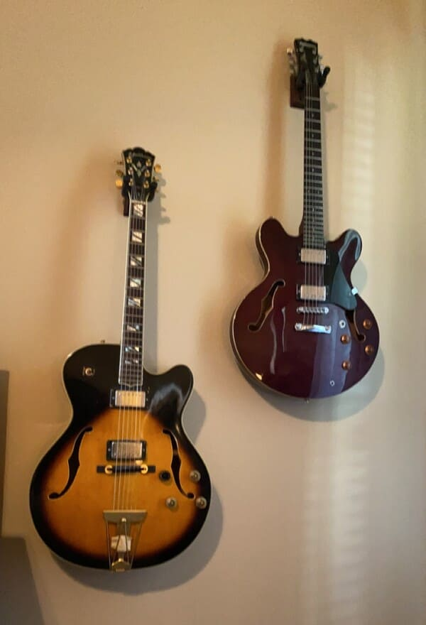

I have been working as a respiratory therapist since 2015. These are the ventilators we use at work.I currently live in Louisiana. This picture was from a New Orleans Pelicans game I attended recently.I also really like watching soccer and going to games when I get a chance.I enjoy going to concerts when I can. This is a picture I took of Red Hot Chili Peppers at Jazz Fest.Here is another picture of Portugal. the Man earlier this year.This is a picture of Margerie Glacier, we saw it on a cruise to Alaska last year. It was a lot bigger in person.This was taken at the Star Wars part of Disney World from a recent family vacation. Star Wars are some of my favorite movies.I started coding as a hobby about a year ago, and decided I liked it enough to try to make a career out of it. This is a snippet of my Chess portfolio project from CS 162.This is a graph project I did in Data Structures and Algorithms.
I also enjoy playing guitar. Here are two of my more interesting looking ones.